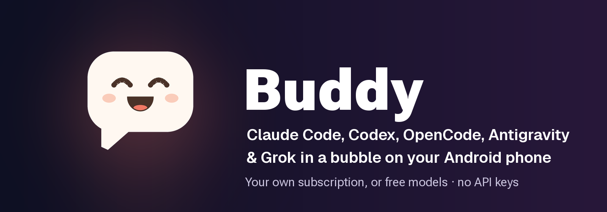
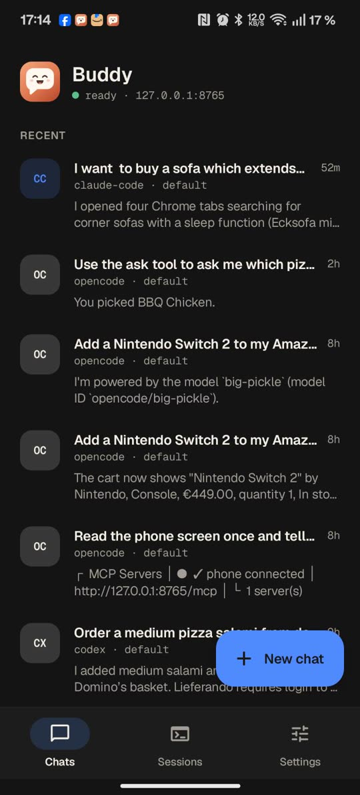
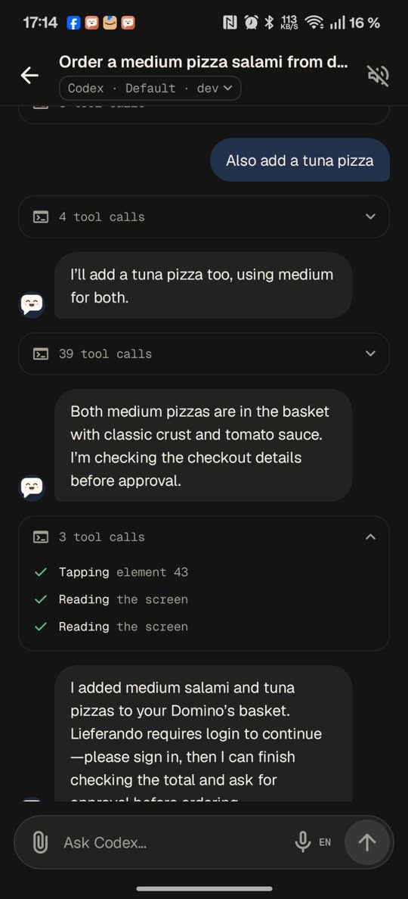
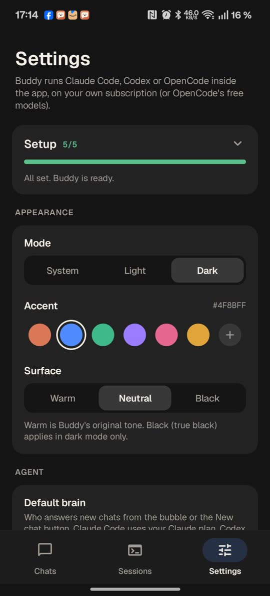

Buddy is a floating chat bubble. Type or say what you want, like “reply to Sam that I'm running late”, and an AI agent reads the screen, taps and types to get it done. It asks you before anything is sent, posted, bought or deleted.
Free and open source (Apache 2.0) · Android 11+, 64-bit · No root, no adb, no PC, no API key

Codex turns on the lights while OpenCode's free model adds a Switch 2 to the Amazon cart (real recordings, waiting sped up).
Buddy runs the agent inside the app, in a small Linux, on the plan you already have: Claude Code with your Claude plan, Codex with your ChatGPT plan, Google's Antigravity CLI (Gemini) with your Google account, or OpenCode with its free models and no account at all.
Messages, shopping, smart home, settings: anything on screen. Add instructions while it works.
Approve, Deny or Change before anything is sent, posted, bought or deleted. Buddy enforces it, not the agent.
“Show me how to turn on dark mode”: it points at each step and waits for your tap.
“When a customer asks on WhatsApp, reply with our opening hours”, with your OK or a countdown you can stop.
Talk to it and have replies read aloud.
Web pages in a browser inside Buddy, without taking over your screen, even while the phone is locked.
In developer mode, “make me a calculator app” builds and installs a real APK on the phone.
The same tools as a local MCP server for your own Claude Code, Codex, OpenCode or Antigravity sessions.



Buddy is a normal Android app with an accessibility service, the kind of permission screen readers use. The agent runs in a small Alpine Linux inside the app and uses Buddy's phone tools (read the screen, tap, type, scroll, open apps) over a local MCP server on 127.0.0.1. No adb or Wireless debugging, and it works without Wi-Fi.
Buddy app / bubble ──► Buddy's Linux (Alpine via proot): claude, codex, opencode or agy
▲ │
└──────────── streamed replies ◄──────────────────────┤
▼
Buddy accessibility service ◄──── MCP on 127.0.0.1 (phone tools)
Yes, with Buddy. Buddy runs Claude Code inside the app and gives it phone tools (read the screen, tap, type, scroll, open apps) through a local MCP server. You use your own Claude plan; no PC, adb or root is needed.
No. Buddy is a normal app with an accessibility service. The agents run inside the app, so there is no adb, Wireless debugging, Shizuku or PC involved.
No. Claude Code uses your Claude plan, Codex your ChatGPT plan and the Antigravity CLI your Google account. OpenCode's free models need no account at all.
Buddy itself stops on buttons like Send, Post, Pay and Delete and shows an approval card. The agent never types passwords, one-time codes or payment details; it hands those steps to you.
Yes. The same phone tools are a local MCP server on the phone, which your own Claude Code, Codex, OpenCode or Antigravity sessions (for example in Termux) can connect to.
Yes. Apache 2.0, with no Buddy servers and no paid tiers. Buddy is an independent project, not made by or affiliated with Anthropic, OpenAI or Google.